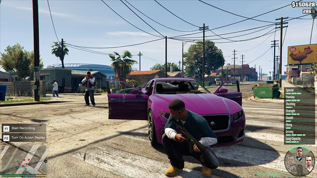

Le Mode Histoire : Explications
Le mode histoire est un mode de jeu qui vous occupera de nombreuses heures. Le principe est simple : vous devrez intéragir avec les pnj du jeu afin de faire les missions données jusqu'à terminer le jeu. Il y a plus de 69 missions à remplir plus ou moins difficiles et toutes différentes les unes des autres. L'ensemble de l'histoire est ponctuée de missions de braquage pour lesquels plusieurs approches stratégiques seront proposées au joueur, En fonction de ce choix, la mission se déroulera d'une manière particulière.

Les Missions
Voici la liste des missions dans GTA V, dans l’ordre chronologique, avec leur nom original :
- Mission : Prologue
- Mission : Franklin et Lamar
- Mission : Saisie
- Mission : Complications
- Mission : Père/fils
- Mission : Chop
- Mission : Conseil conjugal
- Mission : La petite chérie à son papa
- Mission : Demande d'ami
- Mission : La route est longue
- Mission : Repérage de la bijouterie
- Missions de préparation au casse de la bijouterie
- Mission : Casse de la bijouterie
- Mission : M. Philips
- Mission : Trevor Philips Industries
- Mission : Ron le nerveux
- Mission : Légitime défonce
- Mission : Des amis réunis
- Mission : Star ou tocard
- Mission : Port de Los Santos - repérages
- Missions de préparation au coup de Merryweather
- Mission : Le coup de Merryweather
- Mission : Trompe-la-mort
- Mission : Quelqu'un a parlé de Yoga ?
- Mission : A trois, c'est mieux
- Mission : Poudre aux yeux
- Mission : Dans les règles
- Missions de préparation à Mise à sac
- Mission : Mise à sac
- Mission : Room service
- Mission : Tir groupé
- Mission : Mort aux vaches
- Mission : Un oeil dans le ciel
- Mission : Prosti-tueur
- Mission : Tickets siouplé
- Mission : M. Richards
- Mission : Atterrissage forcé
- Mission : Silence, on tourne
- Mission : Turbulence légère
- Mission : Paleto Bay - Préparations
- Mission : Matériel militaire
- Mission : Coup de Paleto Bay
- Mission : Prédateur
- Mission : Déraillement
- Mission : Magouilles
- Mission : Après l'effort, le réconfort
- Mission : Reconnaissance
- Mission : Tête d'enterrement
- Mission : Convoi dangereux
- Mission : Viande fraîche
- Mission : Le grand saut
- Missions de préparation à l'attaque du FIB
- Mission : Attaque du FIB
- Mission : Réunion de famille
- Mission La balade de Rocco
- Mission Papa poule
- Mission : Démêlés judiciaires
- Mission : On remballe
- Mission Lamar est dans la merde
- Mission Pétage de plomb
- Missions de préparation à la mission coup du siècle
- Mission : Le coup du siècle
- Mission : De la difficulté d'être père
- Fins GTA 5 : Guide et choix possibles Lire la soluce des missions du mode Histoire